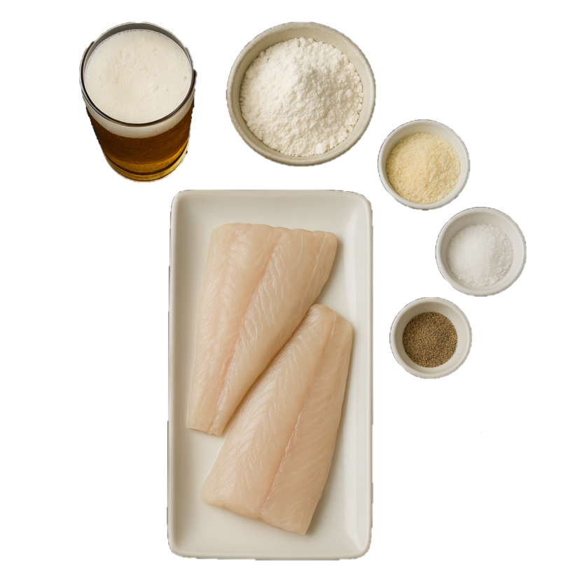
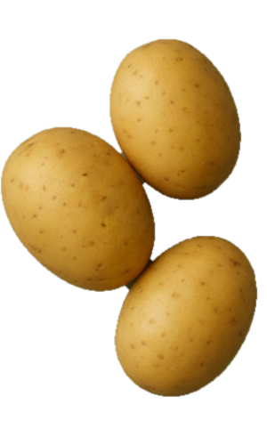
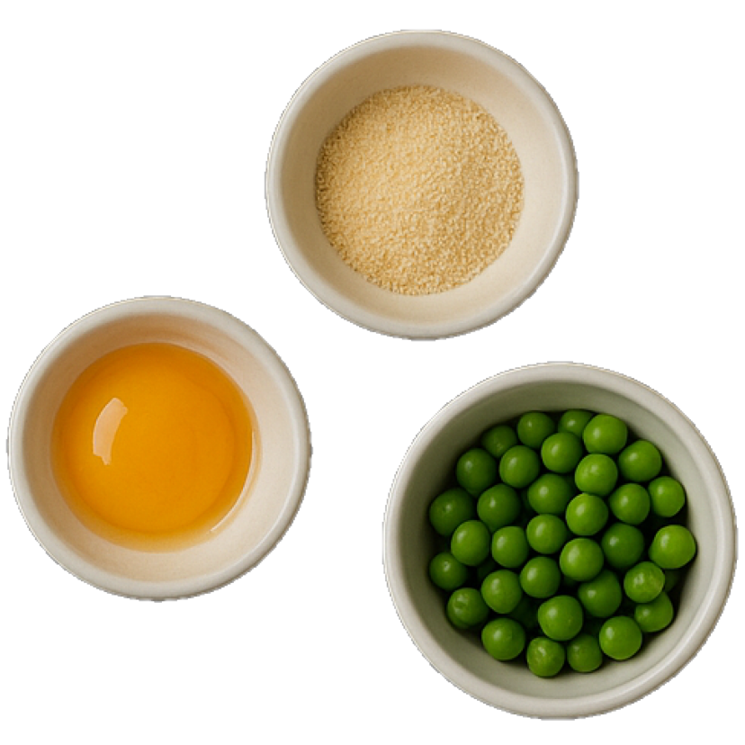
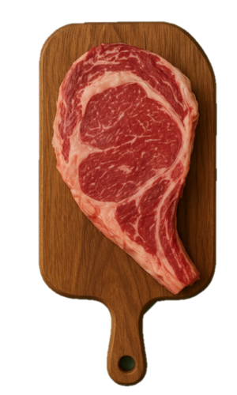
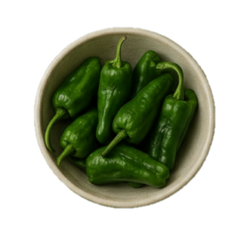

.png)

- 
Ingredients
1 200g Cod fillets, skin off.
200g plain flour, plus extra for dusting.
250ml beer (cold),
3 teaspoons baking powder,
1 handfull of Panko.
PEA MAYO
1 teaspoon of minced garlic,
1 egg,
2 handfuls of green peas,
500 ml canola oil,
½ a lemon.
- 
Method
- Peel and slice the potatoes into chips.
- For the pea mayo:
- take those two eggs and wisk them with a mixer until integrated.
- start pouring the oil while still wisking until we start reaching a white and thick texture.
- at this point we can start adding the peas, dividing them into three rounds (adding oil if need it) until we get a creamy but mushy texture.
- Salt and pepper.
- Pour the sunflower oil into a deep fat fryer or a large sturdy pan and heat it to 190°C/375°F.
- 
Mix 2 a teaspoon of salt and 1 teaspoon of pepper together, then use it to season the fish fillets on both sides – this will help to remove any excess water.
Whisk the flour, beer and baking powder together until nice and shiny – the texture should be like semi-whipped double cream
Dust each fish fillet in a little of the extra flour, then dip into the batter and allow any excess to drip off. While you're holding It to drip batter, sprinkle some of that Panko for extra crispiness (yeah, it's a two handed job) We recomend to fry the fillets one by one.
Cook for 5 minutes, or until the fish is cooked through and the batter is golden and crisp, then remove to kitchen paper to drain.
Meanwhile, parboil the chips in boiling salted water for 5 minutes, or until softened but still retaining their shape, then drain and steam dry.
When the chips are nice and dry, fry in the oil that the fish were cooked in at 180°C/350°F until golden and crisp.
When the chips are done, drain them on kitchen paper, season with salt, and serve with the fish and our alioli.

- 
The Steak
* First, let the steak come to room temperature by leaving it out of the refrigerator for 20 minutes.
* Season both sides with salt and pepper.
* Heat your pan to high and sear the meat to your preferred doneness.
The Potatoes
* Cut the potatoes into even-sized fries.
* Boil them for about 8 minutes, or until they are tender but not falling apart.
* Remove the potatoes from the water and place them in cold water while you heat your oil to 180°C (355°F).
* Fry the potatoes for 4 minutes, remove them from the oil for 3 minutes, then fry again for another 4 minutes.
* Season with salt and pepper.
- 
The Peppers
* Rub the peppers with a little olive oil.
* Season with salt, pepper, and a pinch of cumin (trust me, it adds a special touch).
* Air-fry at 185°C (365°F) for 8 minutes. Alternatively, for deep-frying, fry for 5 minutes at 180°C (355°F) and then season.